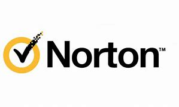
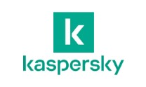
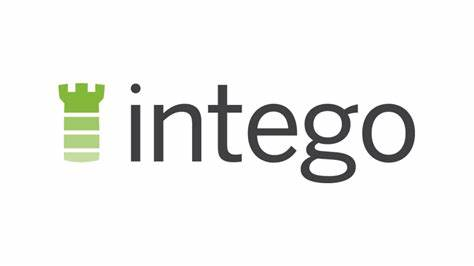

Jest to jeden z najpopularniejszych antywirusów, który zapewnia doskonałą i kompletną ochronę
Posiada: Antymalware, VPN, zapore sieciową, password manager, kontrole rodzicielską i ochronę webcam.
Jest to Antywirus, który posiada te same funkcje, jak Bitfinder, ale
ochrona prywatności w internecie jest niższa niż u konkurencji. Warto również powiedzieć, że Kaspersky może pobierać informacje od użytkownika
i wykorzystywać je w sposób nie do końca legalny.
Ostatni antywirus na liście, w którego skład wchodzi tylko Antymalware.
Poziom bezpieczeństwa urządzenia oraz Prywatności w internecie jest o kilkanaście procent niższy niż u konkurencji.